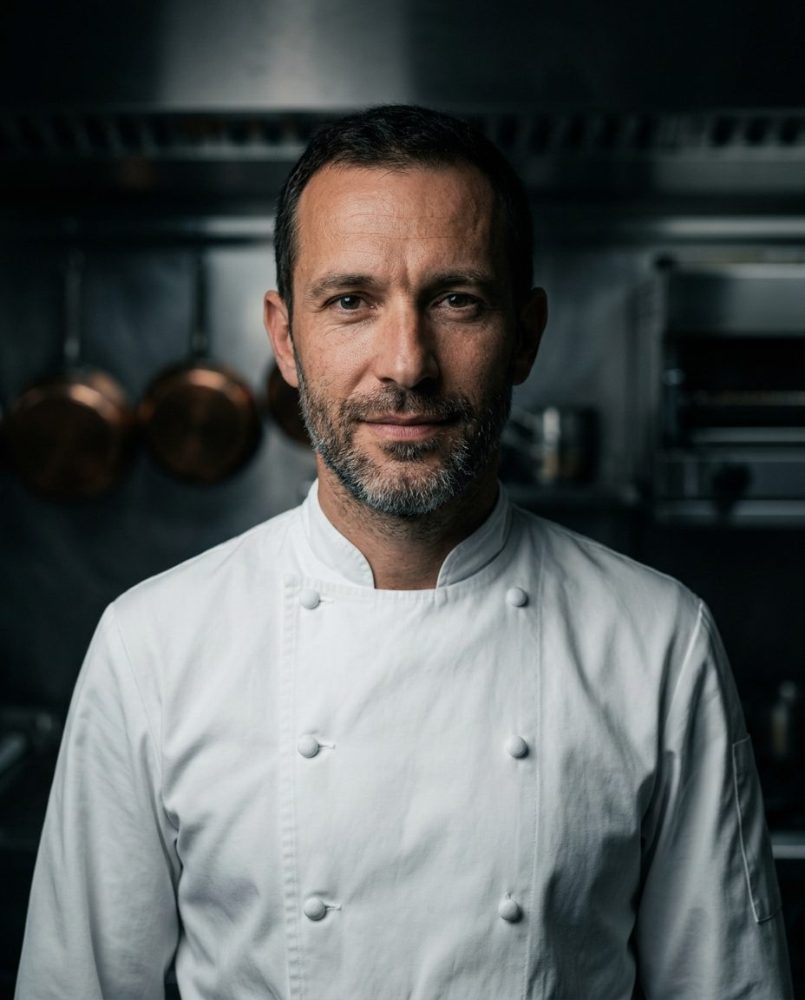

Menu de carrière
Julien Arnaud
Seasonal French technique, cooked with a Gulf pantry.
Amuse-bouche
A chef who cooks for the room.
Julien trained in the brigades of Lyon and Paris, then spent four years on the Riviera learning that service is part of the plate. Since 2020 he has led Maison Ambre, a 90-seat dining room in Dubai's financial district.
His menus follow two calendars: the French seasons and the Gulf's harvests. Dates, saffron, Omani limes and line-caught fish from the Arabian Sea meet classic sauces made the long way.
La carte
Twenty years, four kitchens.
Plats signature
Three plates that tell the story.
Line-caught sea bass
Saffron beurre blanc · fennel ash · Omani lime
Lyon technique, Gulf watersWagyu cheek, slow-braised
Black garlic jus · pommes soufflées · date glaze
Twelve hours, one sauceCardamom soufflé
Date caramel · camel-milk ice cream
A dessert guests rebook forLa brigade
Leading the kitchen, by the numbers.
Mise en place first
Every service starts with a ten-minute briefing at the pass. No surprises after six o'clock.
Waste is a recipe
Trim becomes stock, peel becomes powder. Waste per cover is down 31% since opening.
Grow the team
Commis rotate every quarter so each cook learns every section within a year.
Formation
Training & recognition.
Réservations
Private dinners, consulting and new openings.
Julien takes on a small number of restaurant openings and menu consultations each year, alongside executive chef roles in the Gulf and Europe.